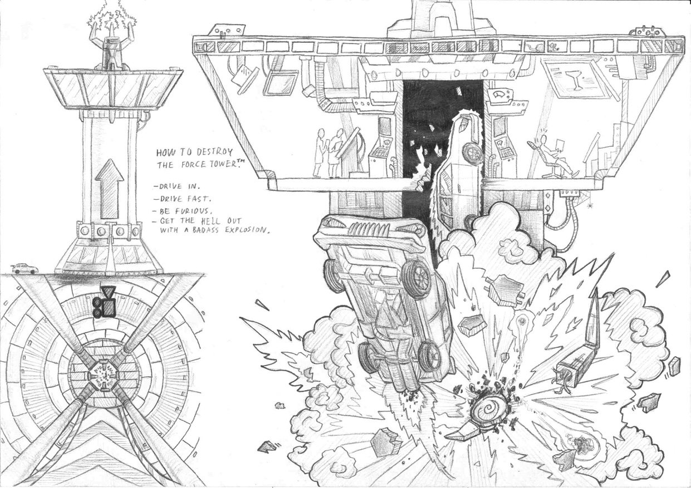
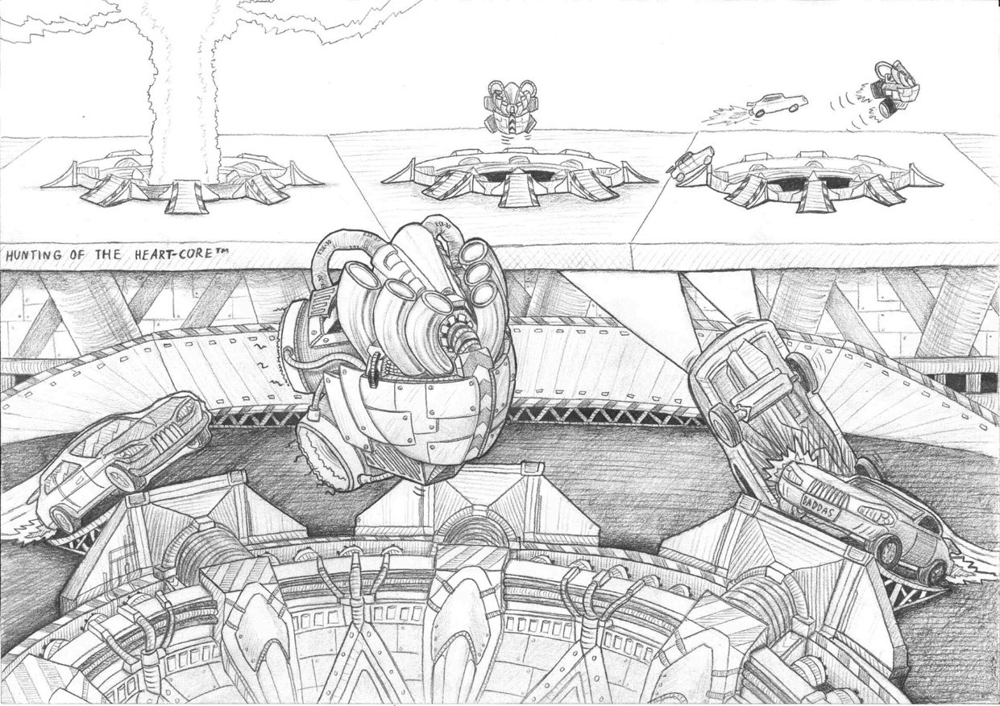
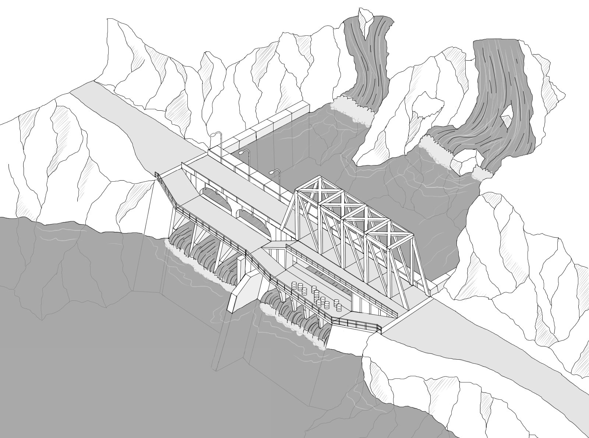
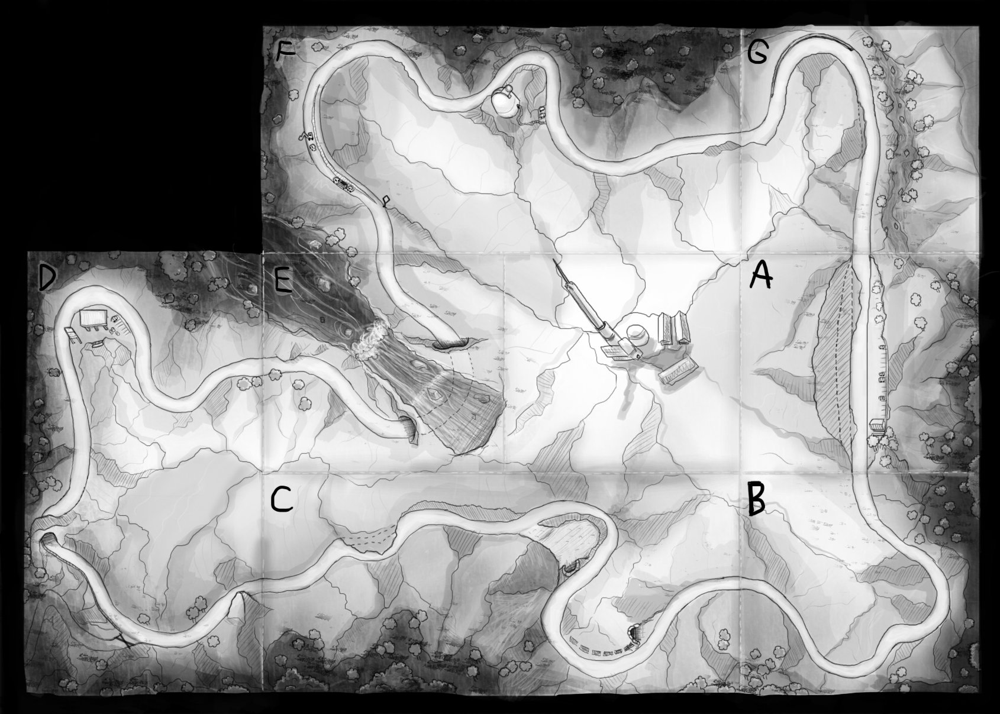
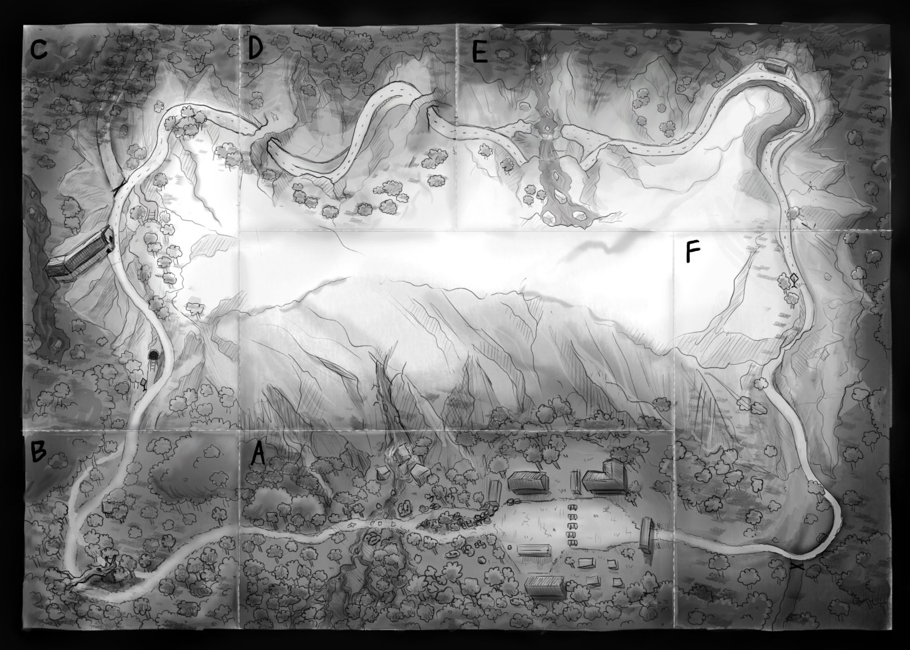

AAA Level Designer at Bugbear Entertainment
I did the level design (using the in-game level editor) of all the tracks appearing on the video above. Environment artists created the assets used in the levels.
Generally I planned the level design first in Photoshop and by doing research depending on what type of level we were working on. Then grayboxed the levels in 3Ds Max and iterated the level after playtesting a lot and getting feedback from the development team and the players. I also collaborated with environment artists in the level creation process. I also created interactive events in the levels with the in-house scripting tool.
In Ridge Racer Unbounded we designed the levels as blocks that can be used in the UGC level editor.
Highlight from my work at Bugbear was an email from the Namco QA team - they sent a bug notification where they just wanted to send their appreciation for my level design!
Read the email here: https://www.shadowbug.com/portfolio/namco_email.txt

Level design concept I drew on paper.

Level design concept I drew on paper.

Level design concept I made in Photoshop.

Track design I made in Photoshop.

Track design I made in Photoshop.